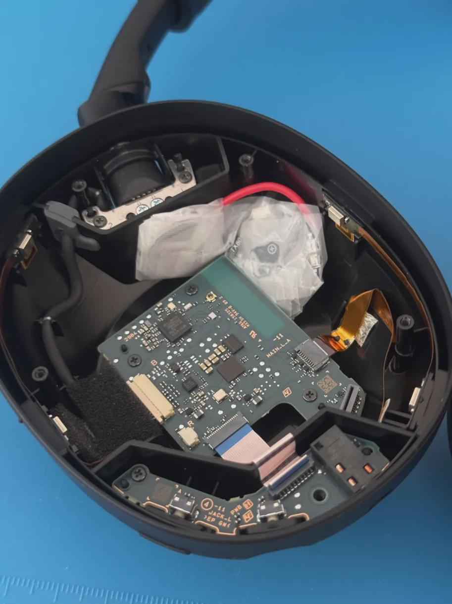

Ajout de support du réseau Find My Apple pour Sony WH-1000XM6
Démontage du casque et d'un traqueur GPS ainsi que son affinement afin de le faire rentrer dans la coque du casque.

Description du projet
Quand on a un bien qui coûte assez cher, on ne souhaite pas le perdre. Malheureusement, ce casque ne dispose pas de manière de le géolocaliser. Je l'ai donc modifié à mes envies.
Car ce projet était d'abord expérimental, j'ai acheté un traqueur GPS compatible avec le réseau Find My bon marché pour m'assurer que le projet pouvait fonctionner, en théorie.
J'ai donc démonté le traqueur GPS afin de le rendre plus fin, pour qu'il puisse rentrer dans le côté gauche du casque: là ou il y a de la place (l'autre côté contient la batterie).
Le traqueur fonctionne de manière autonome avec sa propre pile: cela évite de siphonner la batterie du casque ou de perturber le système de recharge. Cette modification altère ni le confort, ni la qualité audio, ni la réduction de bruit active (ANC) et reste réversible.
Stack Technique
Ce que j'ai appris
Teardown et fonctionnement de circuits électriques à bas voltage de petits PCB; souder des rallonges aux terminaux négatifs et positifs d'un PCB.